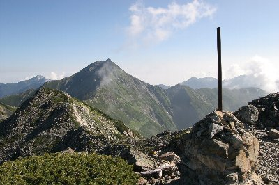
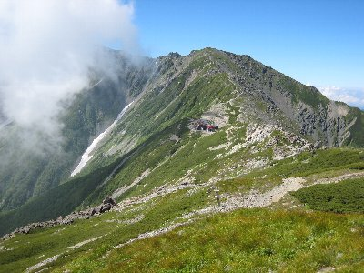
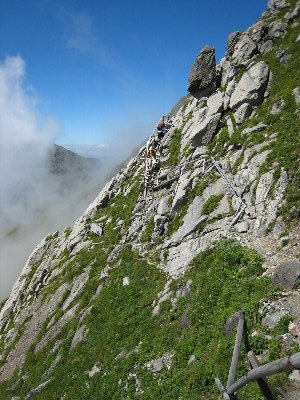

北岳・間ノ岳登山 | 2007年8月 |
|---|---|
| 以前にも行った事がある北岳・間ノ岳だが、今回は前回と違うメンバーでの山行となった。 それだけ北岳に登ってみたい人が居ると言う事だろう。 私自身も、再度登ってみたいとは考えていたので丁度良かった。今回は職場の後輩との３名パーティー。 前回はテント泊のため、テント、シュラフ、炊事道具を持っていたので非常に重くて大変だった記憶が有る。 それはそれで楽しいのだが、今回は初心者集団（もちろん私も含め）であるため、簡単な小屋泊まりとした。 これで荷物は大幅に軽減される。 どれと前回は、ルートは考えていたが道を間違えたり、時間設定をしていない為、小屋到着が大幅に遅れるなど初心者丸出しだったが、今回はルート設定をしGPSにてコース確認、各ポイント毎に到着予定時間を決め遅れが無いようにした。 ルートは前回と同じく、右俣コースを通り小太郎尾根に出て、肩ノ小屋経由、北岳行き。北岳から北岳山荘で山荘泊。 一日目 芦安に車を置き、朝一のバスで広河原に行こうとしたが、目の前で朝一バスに行かれてしまい、朝二バスとなった。それでも、朝７時に広河原から登り始める。天気は上々。若干の雲が出ているが問題はないだろう。 | |
 二俣近辺 雪が残っていた |  小太郎尾根 |
| 二俣までの2時間位は川沿いで、道も険しくないためコースタイム通りに二俣到着。 二俣には残雪が残っていた。 二俣から小太郎尾根までは、勾配がきつく前回はかなりへたばったので、ゆっくりと登って行く。 荷物も少ないので大分楽だ。 ちょっと雲が出てきた。 夏休みと言う事も在るだろうが、子供連れが多い。小学生低学年位の子供が登っている。コンパスが違うから、一段一段が大変だろうな〜 まあ、その荷物も持つ親も大変だが。 小太郎尾根には、ほぼ予定通りに到着。（余裕を見た時間） そのまま肩ノ小屋に行き、北岳山頂まで行く。 北岳山頂は前回より高くなっていた（笑 （2004年10月に測量し直されて、3192ｍから3193ｍに表示変更されたようです。） 日本で2番目に高い山だが、今回も曇りで展望は良くわからない。 北岳山荘に着いたのが16時前。予定通りであるが、もの凄い混んでいる様で、玄関に「本日は布団１つに3名」等と張り出されている。受付をすると、「布団１つに二人でお願いします」と言われた。 取りあえず小屋裏の様な部屋に通されたが、他に人は居ない様だ。これから来る人を見込んでいるのかな？ しかし、この小さい布団に２名でもかなり厳しいのではないだろうか。 ビールを買い、小屋の外で本日の参考に乾杯。雲が晴れてきて北岳が良く見える。 人数が多すぎて、夕食は何回かに分けられていた。僕らは3回目だ。それでも暖かい物が食べられるので嬉しい。 夕食後は山の稜線から夕日を眺めていた。 明日は天気良さそうだ。 朝も早いしもう寝よう。 | |
 北岳山荘からの朝日。右手に富士山が見える |  間ノ岳への道から北岳を望む |
| 夜、人数が予想よりは多くなかったのか、全員が一人1つの布団で寝られたようだ。 後輩の一人は寝付けず、もう一人は夜中外で星を眺めたそうだ。月が沈んでメチャ綺麗だったとか。 翌日は4時半起き。朝日を拝み、朝弁当を食べ（朝食時間まで待つと、大分遅くなってしまうので、朝・昼と弁当を注文した。）5時半には荷物を置いて、間ノ岳に出発。 天気も良くて、遠くまで見渡せる。気持ちが良い。 ７時過ぎには間ノ岳山頂到着。 また静岡市最北端に立つことが出来た。 間ノ岳山頂は平坦で、高い山という気がしないが、これでも日本で4番目に高い山だ。 多くの人が記念写真を撮っていた。 30分ほど休憩をしてから、北岳山荘に戻り、荷物を背負って今度は八本歯ノコルを目指す。 | |
|  北岳小屋から八本歯ノコルへの道から山荘を見る |  八本歯ノコルへのトラバース（人見える？） |
| 方角的には昨日来た方向に戻るのだが、尾根の向こうとこっち側というルートの違い。 八本歯ノコルへのトラバースは、急な斜面に細い道や、足場などでルートが作ってある。 景色は最高に気持ちが良いが、一歩間違うと滑落間違いなし！ 慎重に歩を進める。 （と言いながらも写真撮影に時間を割く） 雄大な北岳バットレスを横目に見ながら、八本歯ノコルへ降って行くと、バットレスにへばり付く人が見えた。クライマーだ。 あそこに立つとどんな気分になるんだろう。 見た目、立てそうに無い。 八本歯を降り切った河原で弁当を食べる。 仕方ないが、ほぼ朝の弁当と同じで水分が欲しくなる。 周囲には残雪が有り、とても涼しい。 残雪もそんなに残っていないので、用意した簡易アイゼンは使うことも無く通過。二俣まで順調に降りていく。 時間も予定通り。 う〜ん、前回はすごい時間が掛かったが、荷物が多かったからかな？ | |
 八本歯ノコルから北岳を。左下に僕ら |  八本歯ノコル |
| 二俣からも順調だったが、30名近い中高年パーティーが、遅い足取りで道を塞いでいたのには閉口した。 まとめ役が居ないのか、どいてくれる事も無く、道が細く列が長すぎて抜くに抜けない。 こんなに長い列では、統制が取れなくて困る気がするのだが。 どこかのガイド付ツアーだとしたら、その会社はガイドの人数をケチっているに違いない。せめて小グループに分けてくれ。 さて、グループが休憩した隙に追い抜き、15時には広河原に到着。16時のバスには余裕で間に合った。 今回も北岳山頂以外は天気も良くて良かった。 人が多いのには参ったが、この時期では仕方ないか。 | |
| 写真＆コメント ｂｙ べっしー | |